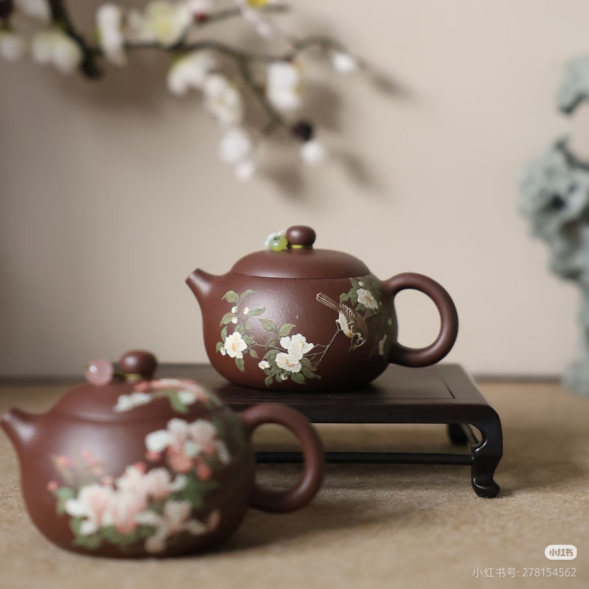
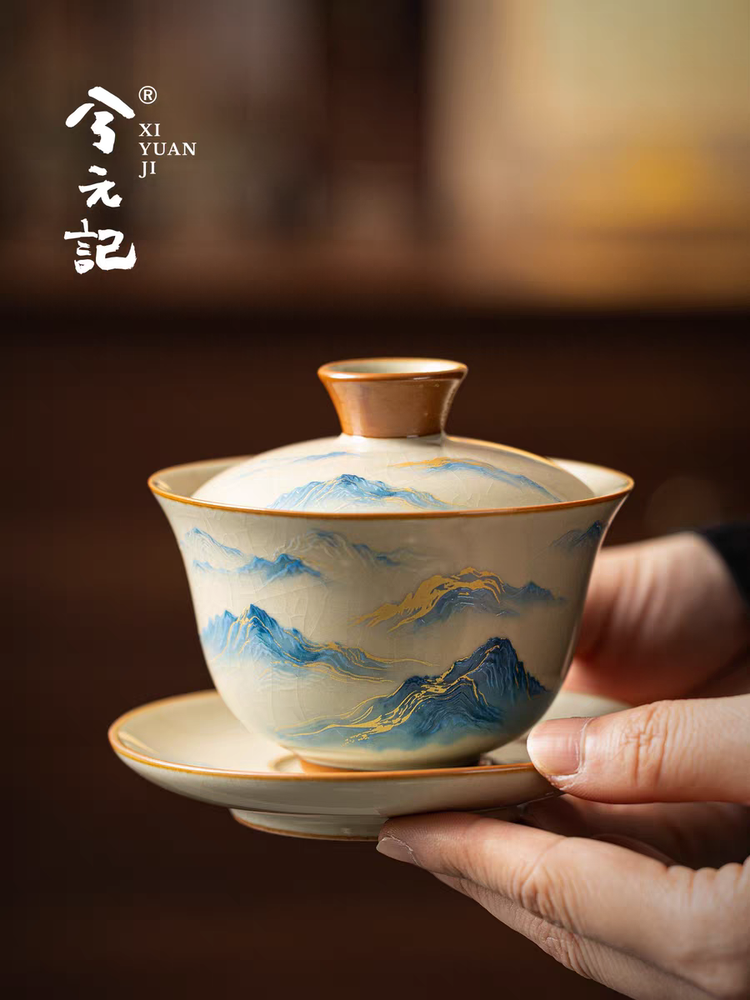
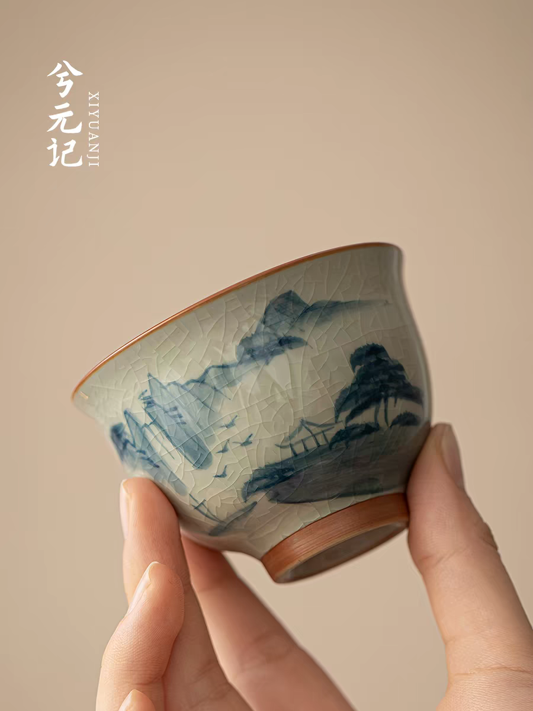
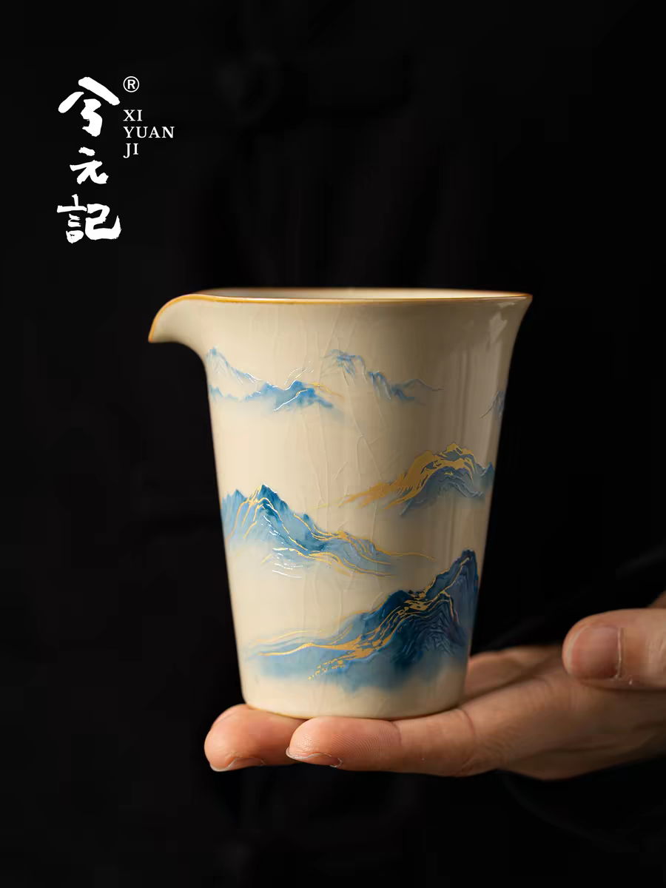
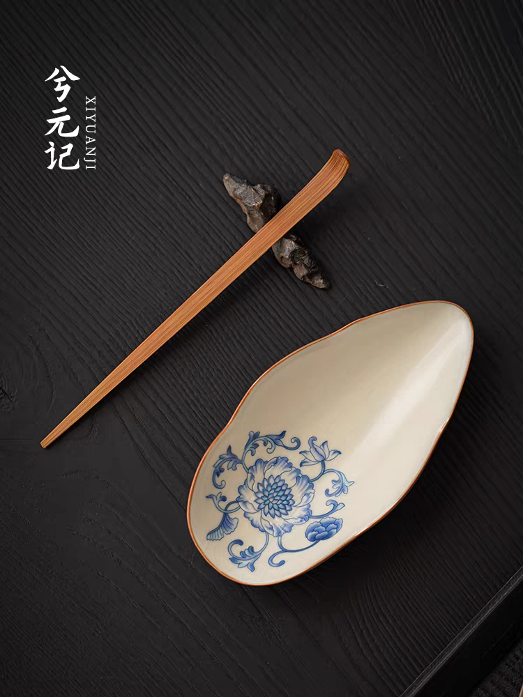
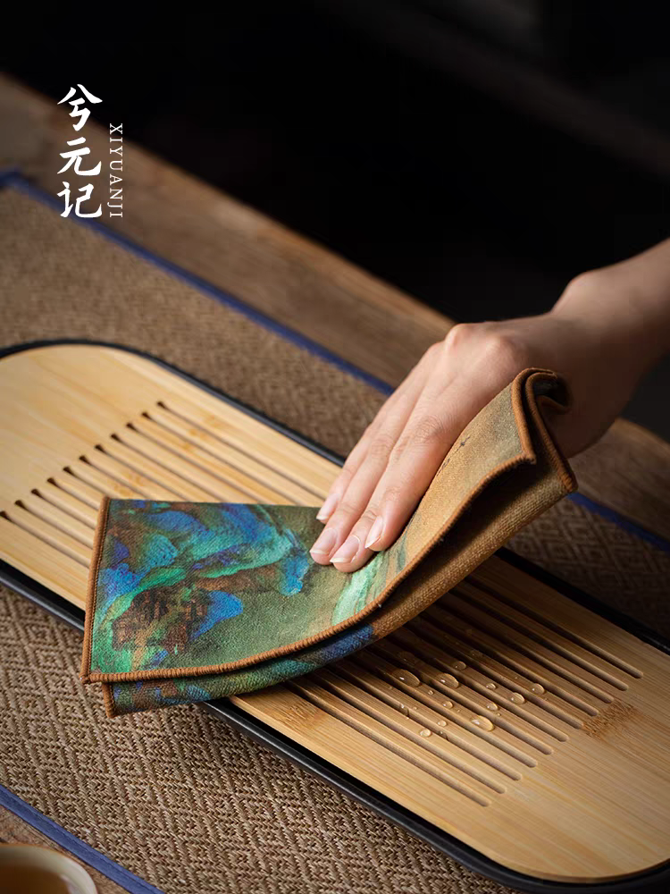
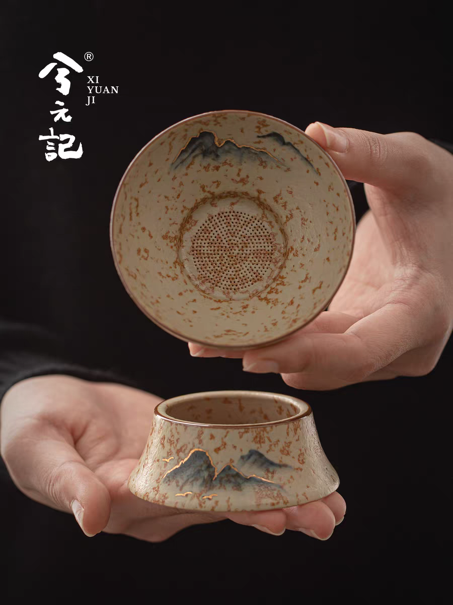
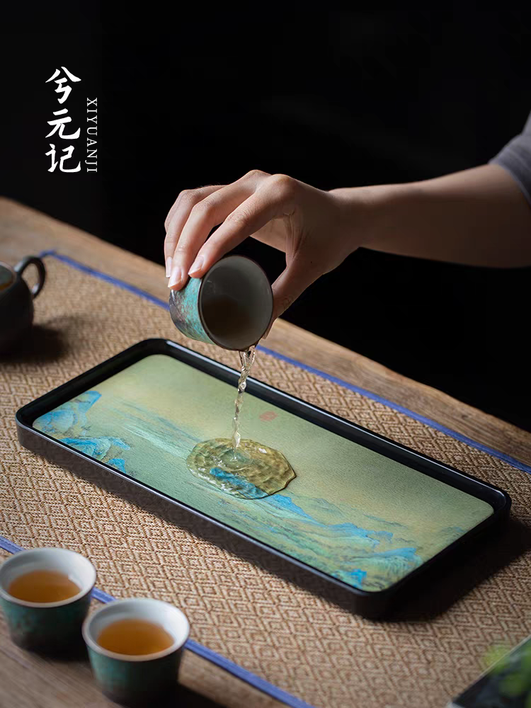

茶具图鉴
认识泡茶工具，让喝茶更有仪式感

紫砂壶
江苏宜兴特产，透气性好，能吸附茶香，越用越有光泽。适合冲泡乌龙茶、普洱茶。

盖碗
由盖、碗、托三部分组成，适用性广，几乎任何茶都可以冲泡。便于观察汤色和叶底。

品茗杯
用于品尝茶汤的小杯，材质有瓷、玻璃、紫砂等。杯型多样，好的品茗杯能提升茶汤的口感。

公道杯
又称茶海，用于盛放泡好的茶汤，均匀茶汤浓度，再分入各品茗杯中。

茶则
用于取茶、量茶的工具，常见材质有竹、木、铜等。使用茶则取茶，避免手直接接触茶叶。

茶巾
用于擦拭茶具和茶桌，保持茶席的整洁干爽。是茶席上的"清洁卫士"。

茶漏
过滤茶汤中的碎末，使茶汤更清澈。常见于冲泡细碎茶叶（如红碎茶）时使用。

茶盘
放置茶具的托盘，有干泡和湿泡之分。是茶席的基础，集美观与实用于一体。